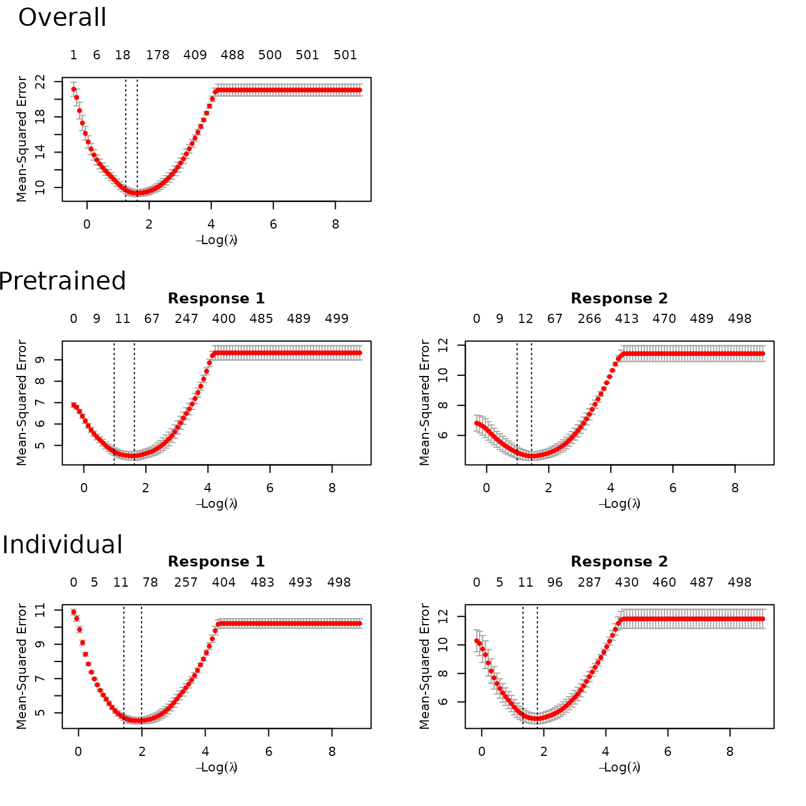

Multi-response data with Gaussian responses
MultiResponseGaussian.Rmd
require(ptLasso)
#> Loading required package: ptLasso
#> Loading required package: ggplot2
#> Loading required package: glmnet
#> Loading required package: Matrix
#> Loaded glmnet 4.1-10
#> Loading required package: gridExtraMultitask learning consists of data with two or more responses . We usually assume that there is shared signal across the responses, and that performance can be improved by jointly fitting models for the responses.
Here, we suppose that we wish to predict multiple Gaussian responses. (If the goal is to predict multiple responses of a different type, see the section “Multi-response data with mixed response types”.)
Pretraining is a natural choice for multitask learning – it allows us to pass information between models for the different responses. The overview for our approach is to:
- fit a multi-response Gaussian model using a group lasso penalty (more below),
- extract the support (shared across responses) and offsets (one for each response), and
- fit a model for each response, using the shared support and appropriate offset.
Importantly, the group lasso penalty behaves like the lasso, but on
the whole group of coefficients for each response: they are either all
zero, or else none are zero (see the glmnet documentation
about family = "mgaussian" for more detail). As a result,
the multi-response Gaussian model is forced to choose the same support
for all responses
.
This encourages learning across all responses in the first
stage; in the second stage, we find features that are specific to each
individual response
.
This is all done with the function ptLasso, using the
argument use.case = "multiresponse".
We will illustrate this with simulated data with two Gaussian responses; the two responses share the first 5 features, and they each have 5 features of their own. The two responses are quite related, with Pearson correlation around 0.5.
set.seed(1234)
# Define constants
n = 1000 # Total number of samples
ntrain = 650 # Number of training samples
p = 500 # Number of features
sigma = 2 # Standard deviation of noise
# Generate covariate matrix
x = matrix(rnorm(n * p), n, p)
# Define coefficients for responses 1 and 2
beta1 = c(rep(1, 5), rep(0.5, 5), rep(0, p - 10))
beta2 = c(rep(1, 5), rep(0, 5), rep(0.5, 5), rep(0, p - 15))
mu = cbind(x %*% beta1, x %*% beta2)
y = cbind(mu[, 1] + sigma * rnorm(n),
mu[, 2] + sigma * rnorm(n))
cat("SNR for the two tasks:", round(diag(var(mu)/var(y-mu)), 2))
#> SNR for the two tasks: 1.6 1.44
cat("Correlation between two tasks:", cor(y[, 1], y[, 2]))
#> Correlation between two tasks: 0.5164748
# Split into train and test
xtest = x[-(1:ntrain), ]
ytest = y[-(1:ntrain), ]
x = x[1:ntrain, ]
y = y[1:ntrain, ]Now, we are ready to call ptLasso with our covariates
x and response matrix y, and we specify the
argument use.case = "multiresponse". A call to
plot shows the CV curves over the lasso parameter
for each model.

To choose the pretraining parameter
,
we can use cv.ptLasso. Using plot, we can view
the CV curve for pretraining together with the overall model
(multi-response Gaussian model) and the individual model (a separate
Gaussian model for each response).
fit = cv.ptLasso(x, y, use.case = "multiresponse")
plot(fit)As in previous examples, we can predict using the
predict; if ytest is supplied, this will print
the mean squared error as well as the support size for the pretrained,
overall and individual models using the single
that minimizes the the average CV MSE across both responses.
preds = predict(fit, xtest, ytest = ytest)
preds
#>
#> Call:
#> predict.cv.ptLasso(object = fit, xtest = xtest, ytest = ytest)
#>
#>
#>
#> alpha = 0.3
#>
#> Performance (Mean squared error):
#>
#> allGroups mean response_1 response_2
#> Overall 9.217 4.608 4.092 5.125
#> Pretrain 9.006 4.503 4.149 4.857
#> Individual 9.324 4.662 4.168 5.157
#>
#> Support size:
#>
#> Overall 57
#> Pretrain 22 (20 common + 2 individual)
#> Individual 75Also as before, we can choose to use the value of that minimizes the CV MSE for each response.
preds = predict(fit, xtest, ytest = ytest, alphatype = "varying")
preds
#>
#> Call:
#> predict.cv.ptLasso(object = fit, xtest = xtest, ytest = ytest,
#> alphatype = "varying")
#>
#>
#> alpha:
#> [1] 0.3 0.3
#>
#>
#> Performance (Mean squared error):
#> allGroups mean response_1 response_2
#> Overall 9.217 4.608 4.092 5.125
#> Pretrain 9.006 4.503 4.149 4.857
#> Individual 9.324 4.662 4.168 5.157
#>
#>
#> Support size:
#>
#> Overall 57
#> Pretrain 22 (20 common + 2 individual)
#> Individual 75